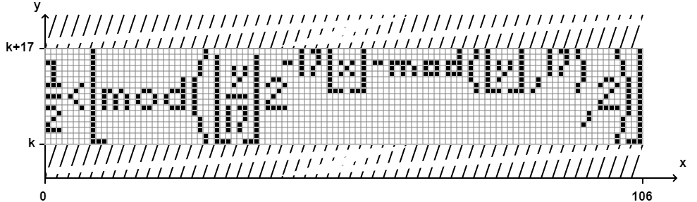

Чтобы отметить пиксель, нажмите левую кнопку мыши, теперь пиксель закрашен. Нажмите правую кнопку мыши, чтобы отменить закраску пикселя. Когда все желаемые пиксели будут закрашены, нажмите на кнопку
Она сгенерирует для Вас число k, которое Вы можете отправить, например, другу
Если же Вам дали это число k или Вы нашли его в интернете, то смело вставляйте его в поле ниже и нажимайте на кнопку
k:Формула всего (Формула Таппера)
В 2001 году Джефф Таппер, разрабатывая программу GrafEq, определил интересную формулу:
Что в ней такого? Ну, на ее графике есть изображение ее самой
Правда, есть одно но. Видите число k по оси Oy? Это число с 544 знаками, т.е. это даже не миллиард. Очень высоко. Во вкладке "На реальном графике" Вы сможете увидеть рисунок только до числа 999999976 (к слову, тут всего 9 знаков)
Интересно, согласен, но это еще не все. На графике этого неравенства можно найти любое изображение, правда, размером 106x17 и одноцветное, но это все равно завораживает
Вот несколько примеров рисунков: